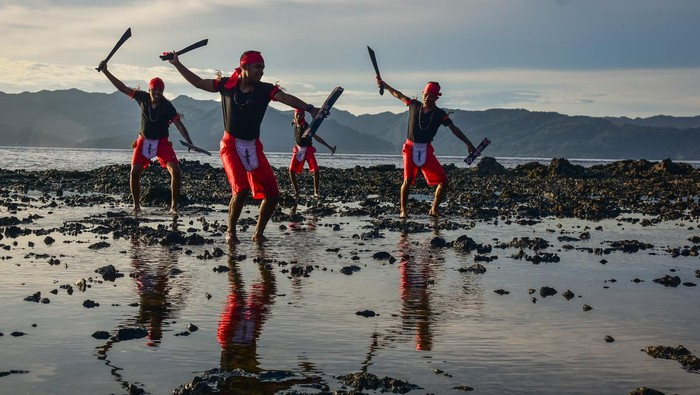
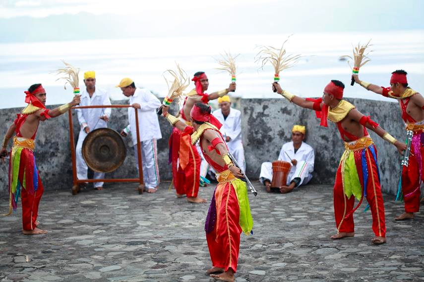
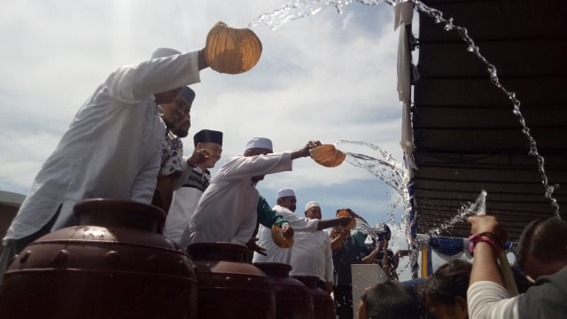
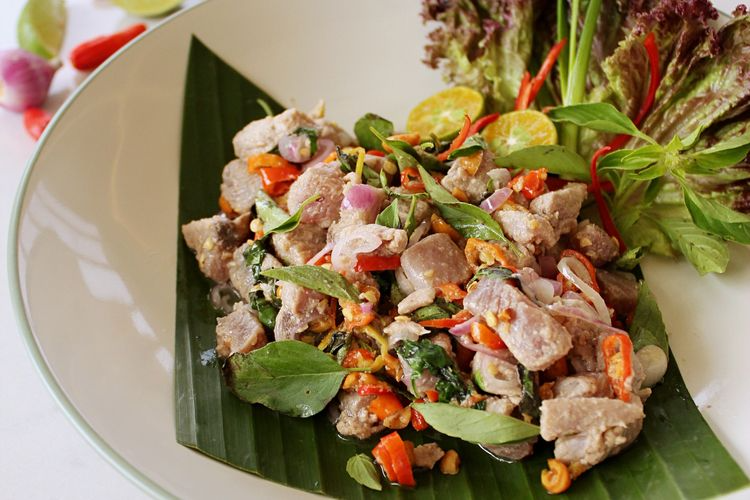
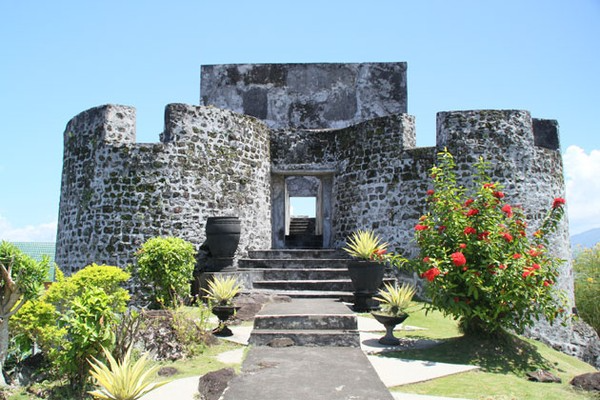

Sumatra
Nusa Tenggara
Maluku
Papua
Maluku Utara
Maluku Utara merupakan provinsi bagian timur Indonesia yang resmi terbentuk pada 4 Oktober 1999 yang sebelumnya menjadi kabupaten dari provinsi Maluku bersama dengan Halmahera Tengah, berdasarkan UU RI Nomor 46 Tahun 1999 dan UU RI Nomor Tahun 2003. Jumlah penduduk Maluku Utara pada tahun 2021 mencapai 1.316.973 jiwa, dengan kepadatan penduduk sebanyak 41 jiwa/km2.
Informasi Umum
| Nama Provinsi | Kode Wilayah | Kode Internasional | Singkatan Umum | Ibu Kota | Hari Jadi | Lambang |
|---|---|---|---|---|---|---|
| Maluku Utara | 82 | ID-MU | Malut | Sofifi | 12 Oktober 1999 |
Budaya
Rumah Sasadu menjadi tempat ritual adat, tempat pertemuan, penjamuan tamu luar Suku Sahu, acara pernikahan, hingga musyawarah adat. Rumah Sasadu merupakan bangunan luas yang menggambarkan kearifan lokal Suku Sahu. Rumah Sasadu berbentuk segi delapan yang menunjukkan delapan arah mata angin. Rumah Sasadu terdiri dari delapan tiang induk (ngaso o lamo), 12 tiang kerangka atap luar (ngasu u dudu), dan 12 tiang penopang rangka atas (ngasu u taba) yang diletakkan di antara ngasu o lamo dan ngasu u dudu. Uniknya, walaupun Rumah Sasadu terdiri dari banyak tiang, namun rumah ini sama sekali tidak memiliki dinding tetapi memiliki pintu.
Baju Koja merupakan baju adat bagi pemuda-pemudi bangsawan. Pemuda-pemudi dari kalangan bangsawan ini wajib mengenakan Baju Koja yang didominasi oleh warna hijau dan kuning. Baju Koja khusus pemuda bangsawan terdiri dari baju berjubah panjang warna hijau yang panjangnya harus melebihi lutut. Di bagian dalam baju koja, dikenakan baju lapisan lagi yang berbahan kain songket warna kuning.
Berikut adalah beberapa tari tradisional Maluku yang masih banyak dipelajari dan ditampilkan sampai saat ini.

Cakalele adalah tarian perang tradisional Maluku yang digunakan untuk menyambut tamu ataupun dalam perayaan adat. Biasanya, tarian ini dibawakan oleh 30 pria dan wanita. Tarian ini dilakukan secara berpasangan dengan iringan musik drum, flute, bia.

Tari Soya-soya adalah salah satu tarian tradisi masyarakat Maluku Utara yang dipercaya telah ada sejak masa Kesultanan Ternate dipimpin oleh Sultan Babullah. Tarian ini termasuk dalam kategori tarian perang yang pada awal terciptanya ditarikan oleh 18 orang laki-laki atau lebih
Bahasa Bajo dituturkan oleh masyarakat di Desa Bajo, Kecamatan Sanana Utara, Kabupaten Kepulauan Sula,Provinsi Maluku Utara. Desa Bajo di sebelah timur berbatasan dengan wilayah tutur bahasa Sula di Desa Mangega dan di sebelah selatan juga berbatasan dengan wilayah tutur bahasa Sula di Desa Pohea.

Upacara prosesi adat Tobo Safar (mandi safar) diawali dengan penyambutan kedatangan Sultan Tidore Husain Sjah dan sejumlah bobato adat menggunakan Perahu Sultan yang tiba di dermaga Majui. Acara dilanjutkan dengan penyambutan oleh Panglima tarian Maku Toti kepada pasukan pembawa bambu berisi air yang diambil dari sumur Togubu di teluk Gamgau. Setelah pasukan pembawa bambu berada di tengah lokasi upacara, pesan leluhur diperdengarkan lalu bambu dibawa masuk ke dalam Masjid sekaligus ritual doa permintaan berkat. Bambu berisi air kemudian dituang ke dalam mangkok putih yang kemudian Imam Masjid akan membacakan doa safar ke dalam air, lalu air tersebut dijadikan air mandi.
Parang Salawaku adalah sepasang senjata tradisional dari Maluku. Parang Salawaku terdiri dari Parang (pisau Panjang) dan Salawaku ( perisai ) yang pada masa lalu adalah senjata yang digunakan untuk berperang. Bagi masyarakat Maluku, Parang dan Salawaku adalah simbol kemerdekaan rakyat.
Rumba merupakan alat musik tradisional Maluku Utara yang mempunyai bentuk mirip dengan maraka. Alat musik rumba merupakan alat musik yang dimainkan dengan menggunakan beberapa lagu dalam irama bahagian pada saat menari. Bahkan biasanya alat musik ini dimainkan secara bersama-sama dengan menggunakan alat musik ukulele atau Hawai.
Lagu "Borero" merupakan salah satu lagu daerah yang berasal dari Provinsi Maluku Utara. Lagu "Borero" sering dinyanyikan oleh masyarakat Maluku Utara dan akan terus diwariskan dari generasi ke generasi. Lagu "Borero" dimaknai sebagai upaya untuk menjaga dan mewariskan tradisi lisan masyarakat Maluku Utara melalui lagi sebagai media komunikasinya.
Kuliner
Kuliner ikan asap asli daerah Maluku ini diolah dengan teknik pengasapan. Biasanya, ikan yang dipakai adalah jenis ikan cakalang serta tuna. Banyak yang bilang jika kedua ikan ini akan awet ketika diasapi. Serta membuat tekstur rasanya begitu khas.
Destinasi Wisata
Benteng Tolokko adalah benteng peninggalan Spanyol yang berada di Kelurahan Sangaji, Kecamatan Ternate Utara, Kota Ternate, Maluku Utara, Indonesia. Benteng Tolukko dibangun oleh seorang panglima Spanyol yang bernama Francisco de Ayala, pada tahun 1522. Benteng ini dibangun Spanyol untuk mencoba mengusir Belanda dari pulau[3] Benteng ini diambil alih oleh Belanda pada tahun 1612 (setelah Spanyol meninggalkan benteng ini) dan direnovasi oleh Pieter Both. Pada tahun 1864, oleh Residen P. van der Crab, benteng Tolukko dikosongkan karena sebagian bangunannya telah rusak.